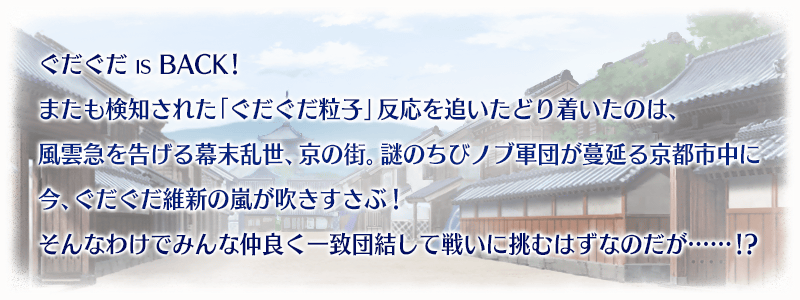
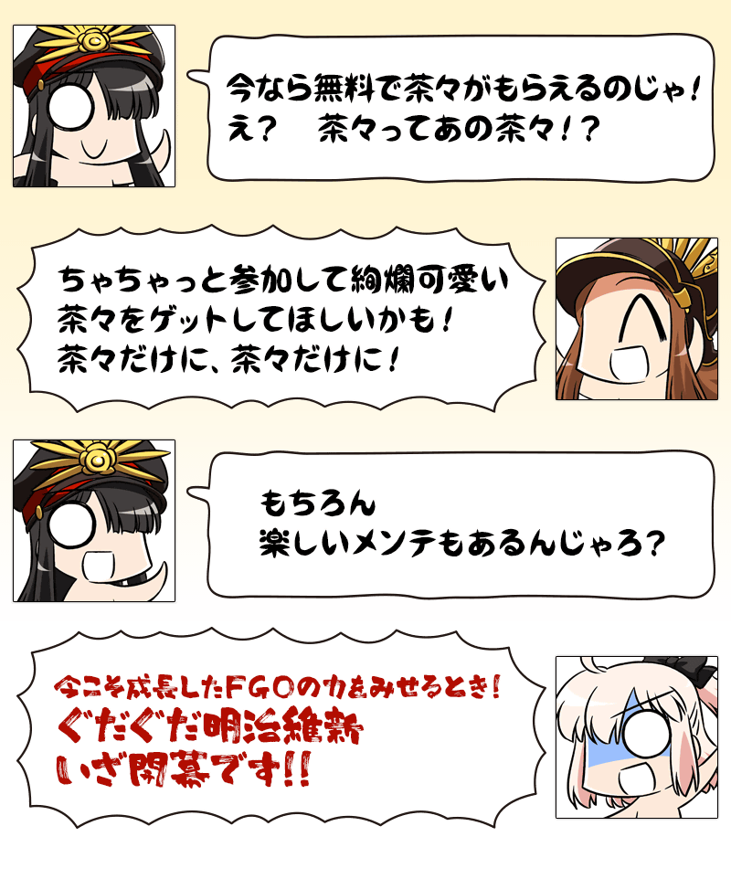
◆活動舉辦期間◆
2017年4月5日(三) 18:0020:00～4月19日(三) 13:59
◆活動概要◆
舉辦期間限定活動「GUDAGUDA明治維新」！
活動限定Servant「★4(SR)茶茶」登場！
推進主線關卡到最後，讓茶茶加入吧！
本活動為分成2方勢力競爭發生「勢力戰」。
「勢力戰」為全部Master「新選組點數」「織田幕府點數」哪邊收集更多來決定勝敗。
在「勢力戰」角逐收集點數，取得茶茶専用再臨素材「蘭奢待」和茶茶的寶具等級提升必要活動専用道具「日輪扇子」等豪華報酬吧！
◆参加條件◆
只有通過「特異點F 炎上汙染都市 冬木」的Master才能參加
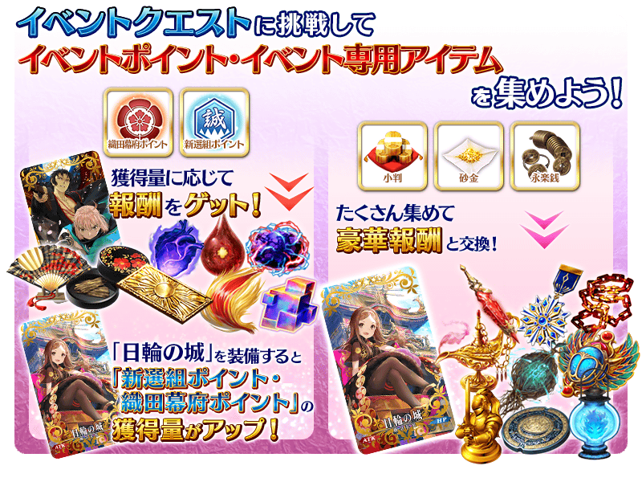
本活動中，隨著主線關卡進行，會發生分成2方勢力競爭的「勢力戰」。
選擇「新選組點數」「織田幕府點數」各自收集關卡後反覆刷，收集點數。
「勢力戰」的勝敗為全部Master收集更多哪邊的點數來決定。
勝敗決定後，除了參加該勢力戰的Master全員能獲得勝利勢力的點數獎勵報酬，決勝戰及一部份主線關卡的故事內容會有所變化。
※根據活動参加時機的不同，會有勢力戰不出現的情況。
在該情況並不會影響主線關卡的進行。
※獎勵報酬在通過「決勝戰」直接賦予至禮物箱。
※在禮物箱領取獎勵點數的話，會反應到勝利勢力的點數。若一直放在禮物箱，不會反應到點數。
※活動道具交換期間結束後，獎勵點數將會消失。
※活動限定概念禮裝「日輪の城」的效果，不會反應在可在参加勢力戰所入手的勝利勢力點數報酬。
※關於另一方的勢力勝利情況的故事，也能藉由主線關卡進行在活動期間結束後於「圖鑑(マテリアル)」確認。
※4/5(三)修正

◆勢力戰進行時間表◆
「勢力戰」在活動期間中，會配合主線關卡的進行發生3次。
勢力戰有舉辦期限，根據期限內全部Master收集最多的點數的點數來決定勝敗。
| 舉辦期限 | |
|---|---|
| 第1戰 | 4月5日(三) |
| 第2戰 | 4月6日(四) 23:00～4月7日(五) 22:59 |
| 第3戰 | 4月7日(五) 23:00～ |
※各舉辦期限結束後也能挑戰「決勝戦」。
※第3戰結束後，通過主線關卡到的話，接著會開放可獲得「新選組點數」「織田幕府點數」的自由關卡。
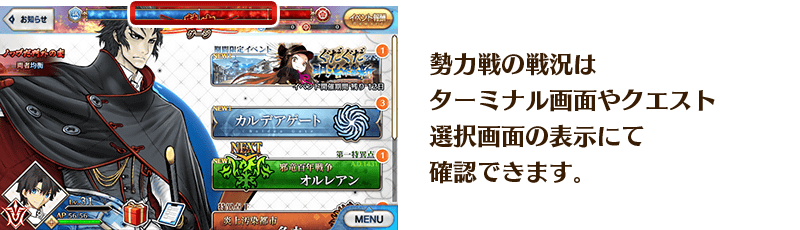
|
◆關於挑戰關卡◆ ◆挑戰關卡初次通過報酬◆ |
◆報酬獲得方法◆
當活動點數每達到一定數以上，在關卡結束時自動進行報酬獲得。
能獲得報酬的列表可從在管理室(ターミナル)出現的「活動報酬」按鈕開啟的「活動報酬畫面」確認。
◆能用新選組點數獲得的道具◆
|
【活動限定概念禮裝】 |
◆能用織田幕府點數獲得的道具◆
|
【活動限定概念禮裝】 |
在期間限定活動「GUDAGUDA明治維新」會出現持有特殊HP量條的強力敵人。
這種敵人，必須減少複數次量條才能擊倒！
※透過一次的攻擊，超過HP量條的傷害不反映在下個HP量條。
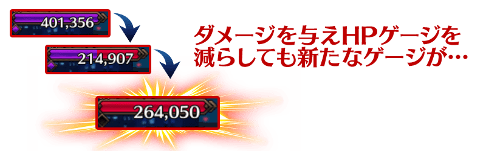
※4/5(三)追記
◆超值攻略方法・其1◆
對象的Servant在「GUDAGUDA明治維新」關卡中的攻擊威力提升！
【對象Servant】
愛德華・蒂奇、Emiya(Archer)、海倫娜・布拉瓦茨基、沖田總司、織田信長、庫・夫林(Lancer)、茶茶、湯瑪斯・愛迪生、謎之女主角Ｘ、謎之女主角Ｘ〔Alter〕、尼古拉・特斯拉、土方歳三、美狄亞、美杜莎(Rider)
※各Servant的增加量有所差異。
◆超值攻略方法・其2◆
裝備可在活動道具交換入手的活動限定概念禮裝「日輪の城」的話，「新選組點數」「織田幕府點數」的掉落獲得量會提升。
另外，裝備可在「新選組點數」「織田幕府點數」的點數報酬獲得的活動限定概念禮裝「壬生狼」的話，在「GUDAGUDA明治維新」中我方全體(含候補)的攻擊威力會提升。
◆超值攻略方法・其3◆
裝備期間限定概念禮裝的話，活動専用道具「小判」「砂金」「永樂錢」各自的掉落獲得數會提升。
※請注意在各關卡的道具掉落率並非100%。
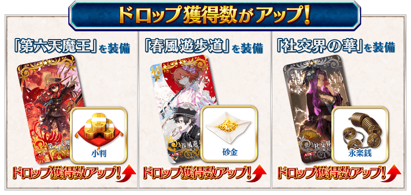
|
◆活動限定概念禮裝◆ |
| 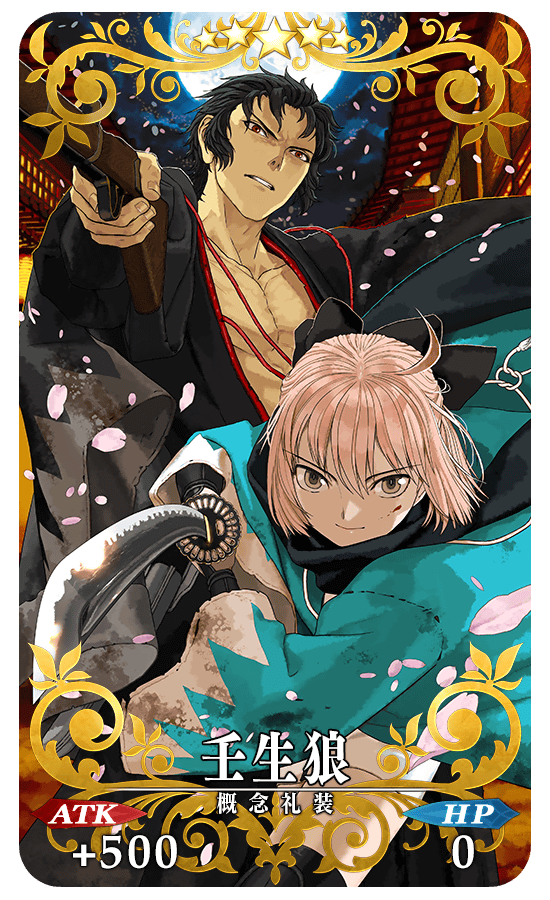 |
★★★★★SSR 壬生狼 ATK 500(最大:2000) HP 0 技能 自身的Quick卡性能提升8%＆Buster卡性能提升8%＆賦予每回合星星3個獲得狀態 ＋ GUDAGUDA明治維新中，我方全體(含候補)的攻擊的威力提升50%【『GUDAGUDA明治維新』活動期間限定】 |
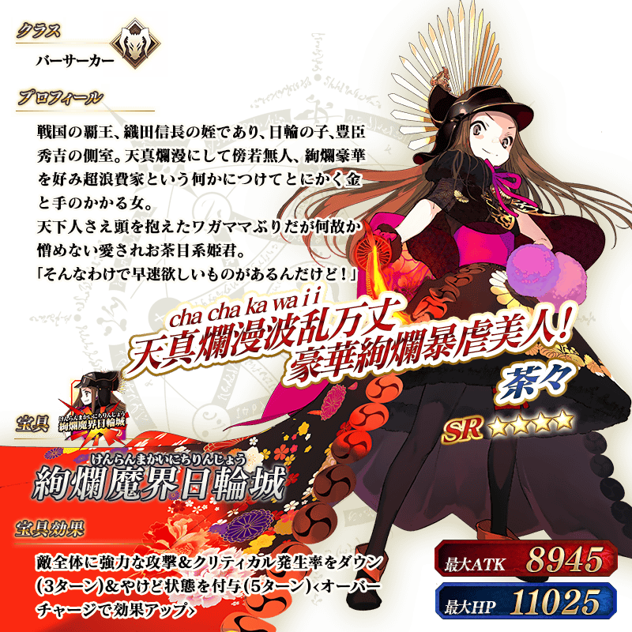
◆靈基再臨◆
使用在活動期間中的「織田幕府點數」的點數報酬外無法入手的「蘭奢待」的話，重複4次靈基再臨的話，卡面會有所變化！
※茶茶不會隨靈基再臨使戰鬥角色的外觀變化。
|
◆取得活動期間限定·概念禮裝用EXP卡吧！◆ |
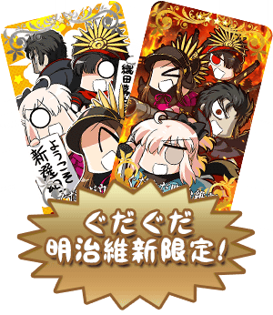 |
◆交換方法◆
交換期間：2017年4月5日(三) 18:0020:00～4月26日(三) 12:59
※交換期間結束後「小判」「砂金」「永樂錢」將消失。
自達文西工房内的「活動道具交換」，可用活動専用道具交換以下的道具。
◆能用小判交換的道具◆
|
【活動限定概念禮裝】 |
◆能用砂金交換的道具◆
|
【活動限定概念禮裝】 |
◆能用永樂錢交換的道具◆
|
【活動限定概念禮裝】 |
◆「GUDAGUDA明治維新Pick Up召喚」期間◆
期間：2017年4月5日(三) 18:0020:00～4月19日(三) 13:59
以期間限定舉辦「GUDAGUDA明治維新Pick Up召喚」！
「★5(SSR) 土方歳三」以期間限定登場！
與在活動活躍的Servant「★5(SSR)尼古拉・特斯拉」以每日交替Pick Up！
另外，期間中「★4(SR)湯瑪斯・愛迪生」「★4(SR)海倫娜・布拉瓦茨基」「★3(R)美狄亞」常駐Pick Up！
詳情請在聖晶石召喚畫面左下的召喚詳細確認。
※土方歳三在Pick Up期間結束後，不會追加到故事召喚。
裝備期間限定概念禮裝「★5(SSR)第六天魔王」「★4(SR)春風遊歩道」「★3(R)社交界の華」的話會提升活動専用道具的掉落獲得數。
※「★3(R)社交界の華」在Pick Up期間中，也能在友情點數召喚獲得。
Pick Up期間中，期間限定Servant、Pick UpServant、期間限定概念禮裝的出現機率提升！
10次召喚中確定1張★4(SR)以上和確定1位★3(R)以上的Servant！
※確定★4(SR)以上包含Servant和概念禮裝。
※所謂「出現機率提升」意指比同稀有度的Servant及概念禮裝出現機率更高的設定。
| 每日交替Pick Up | 每日交替Pick Up内容 |
|---|---|
| 4月5日(三) 4月12日(三) 22:59 |
土方歳三 |
| 4月12日(三) 23:00～ 4月13日(四) 23:59 |
尼古拉・特斯拉 |
| 4月13日(四) 23:00～ 4月14日(五) 23:59 |
土方歳三、尼古拉・特斯拉 |
| 4月14日(五) 23:00～ 4月19日(三) 13:59 |
土方歳三 |
※請註意會以每日交替變更Pick Up的Servant
※關於湯瑪斯・愛迪生、海倫娜・布拉瓦茨基、美狄亞，在本Pick Up期間中，為常駐常時Pick Up的對象。
※尼古拉・特斯拉、湯瑪斯・愛迪生在Pick Up期間中，在各章通過前也能入手。
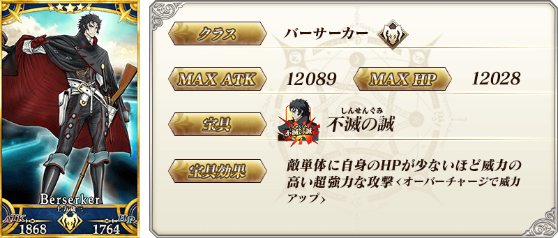

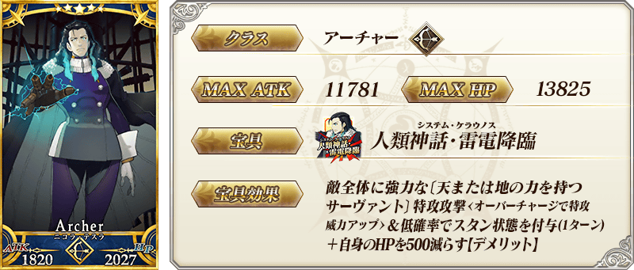
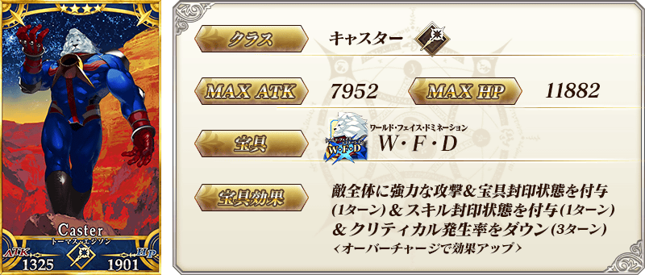
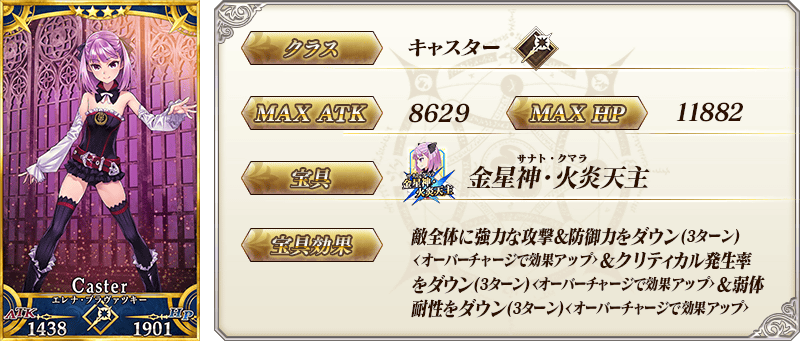

| 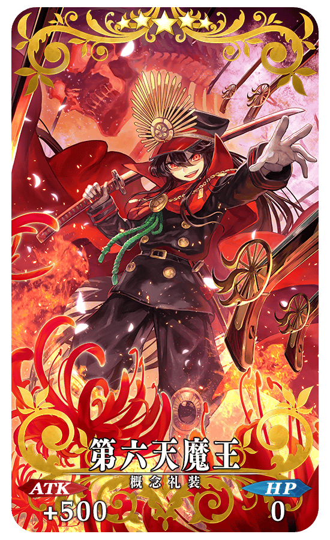 |
★★★★★SSR 第六天魔王 ATK 500(最大:2000) HP 0 技能 自身的Buster卡性能提升15%＆寶具威力提升15% ＋ 小判的掉落獲得數增加1個【『GUDAGUDA明治維新』活動期間限定】 |
| 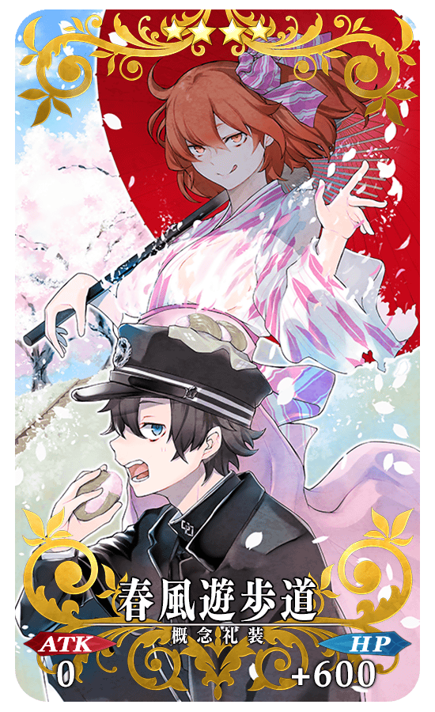 |
★★★★SR 春風遊歩道 ATK 0 HP 600(最大:2250) 技能 自身的NP獲得量提升15％＆賦予傷害減免300狀態 ＋ 砂金的掉落獲得數增加1個【『GUDAGUDA明治維新』活動期間限定】 |
| 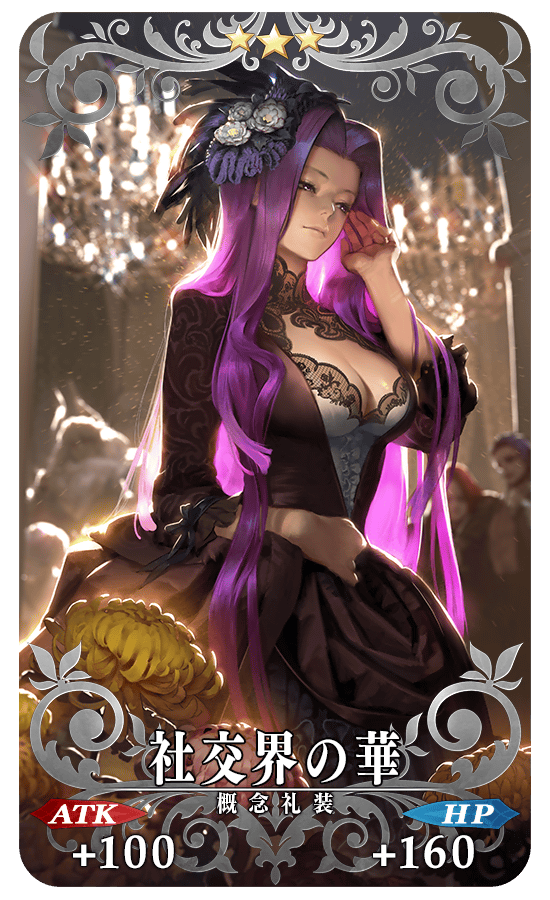 |
★★★R 社交界の華 ATK 100(最大:500) HP 160(最大:800) 技能 自身的Quick卡性能提升4%＆Arts卡性能提升4% ＋ 永樂錢的掉落獲得數增加1個【『GUDAGUDA明治維新』活動期間限定】 |

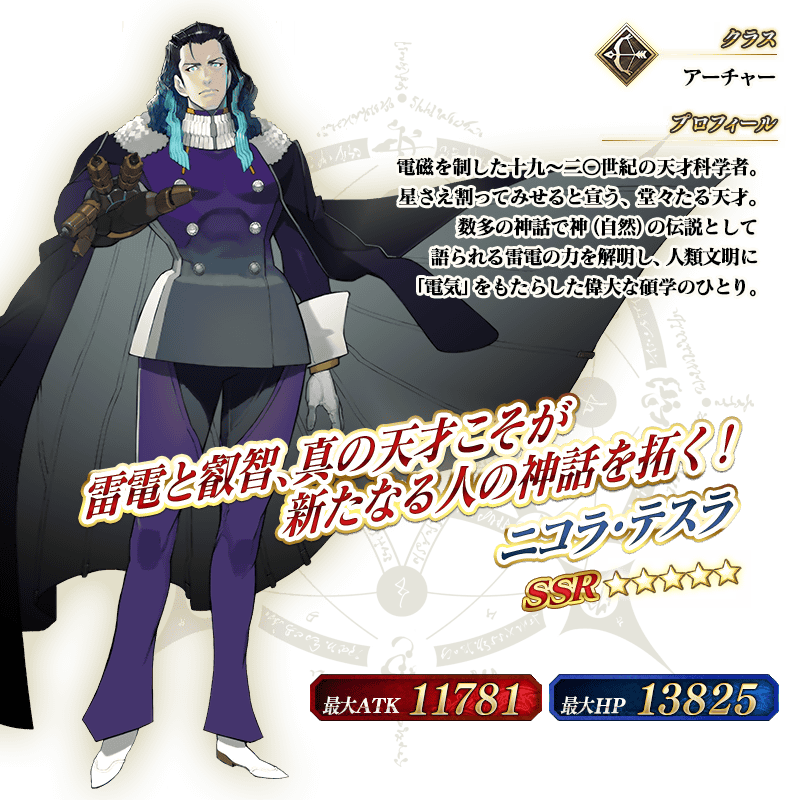